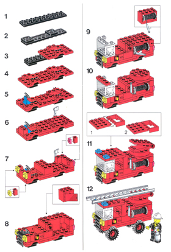
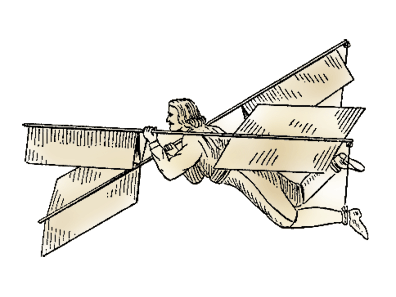

Object-Oriented Design

Procedures
- Define a list of tasks to perform.
- Tasks build upon one another.
Procedures quickly hit critical mass.
As the size of a procedural program grows, it becomes increasingly difficult to understand, and thus harder to modify.
Procedures fail because...
- Small changes cascade down through the program.
- Changing one thing breaks another.
- Customization is difficult, which leads to repitition.
What is OO?
An object-oriented program is designed as a collection of interacting objects, rather than a list of tasks to perform.
Two approaches to flight:

The procedural flight system
- The application is dependent on all mechanics.
- Parts are individually dysfunctional.
- Does not support partial testing.
The OO flight system
- The application is the sum of its parts.
- Individual objects are testable.
- Easily scalable design.
- Individual objects are customizable.
Core concepts of OO
Role.
Interface.
Encapsulation.
Role
- Objects should have a single role to play, or job to do.
- They should only contain the code for their specific job.
Interface
- Objects expose a public interface, or set of known methods.
- Objects communicate with each other using their respective interfaces.
Encapsulation
- Objects are self-contained "black boxes" of code.
- They conceal their internal methodologies.
- They are not concerned with each other's internal workings.